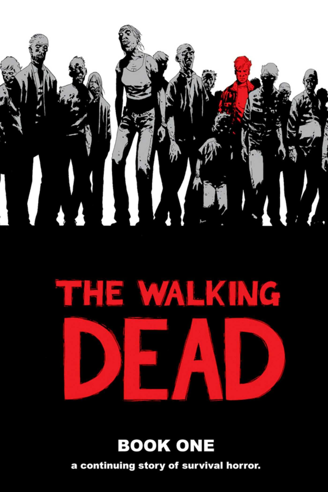

Historia
Robert Kirkman es un escritor y creador de cómics estadounidense, nacido el 30 de noviembre de 1978 en Lexington, Kentucky. Es reconocido principalmente por ser el autor de The Walking Dead, una de las series de cómics más populares y exitosas de todos los tiempos, que fue adaptada a una famosa serie de televisión.
Kirkman también es el creador de Invencible, una serie que comenzó en 2003 junto al ilustrador Cory Walker. En esta obra, Kirkman ofrece una visión renovada del género de los superhéroes, centrándose en un joven llamado Mark Grayson, quien lucha por encontrar su lugar en un mundo lleno de héroes y villanos.
Además de sus éxitos en los cómics, Kirkman cofundó la compañía Skybound Entertainment, que ha sido clave en la adaptación de sus obras a otros medios, como la televisión y el cine. Su estilo narrativo se caracteriza por un enfoque maduro y realista, abordando temas complejos como la moralidad, la familia y la supervivencia.
Sus Obras Más Famosas
|

The Walking Dead |
Invencible |
Outcast |
Skybound Entertainment
En 2010, Kirkman cofundó Skybound Entertainment, una compañía que ha ayudado a llevar muchas de sus creaciones, como The Walking Dead e Invencible, a otros medios. Skybound ha sido clave en la adaptación de estas historias a la televisión y al cine, incluyendo la popular serie de The Walking Dead, que comenzó a transmitirse en 2010 y sigue siendo una de las series más populares de la televisión.
Además, Skybound también ha sido un lugar de lanzamiento para nuevas obras y otros proyectos en la industria del entretenimiento, consolidándose como una de las productoras de contenido más influyentes en el ámbito de los cómics y la televisión.
El Estilo de Robert Kirkman
- Tramas intensas y profundas: A menudo sube la apuesta, dejando a los personajes en situaciones límite que desafían su moralidad y su supervivencia.
- Personajes complejos: Sus personajes son multidimensionales y evolucionan de maneras inesperadas. No existen héroes perfectos ni villanos unidimensionales.
- Temas oscuros y maduros: En Invencible y The Walking Dead, no hay tabúes a la hora de tratar temas como la muerte, la violencia, la lealtad y la traición.
- Innovación dentro del género: Kirkman toma géneros como el de los superhéroes y los zombis y los lleva más allá, dándoles una vuelta única y refrescante que atrae tanto a los fans del género como a los nuevos lectores.